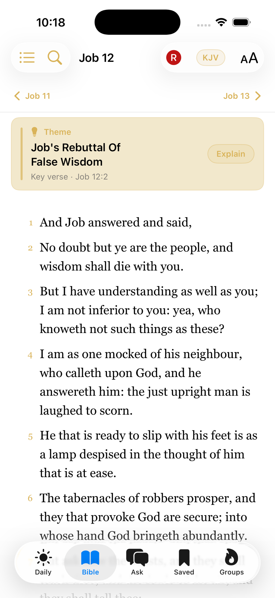
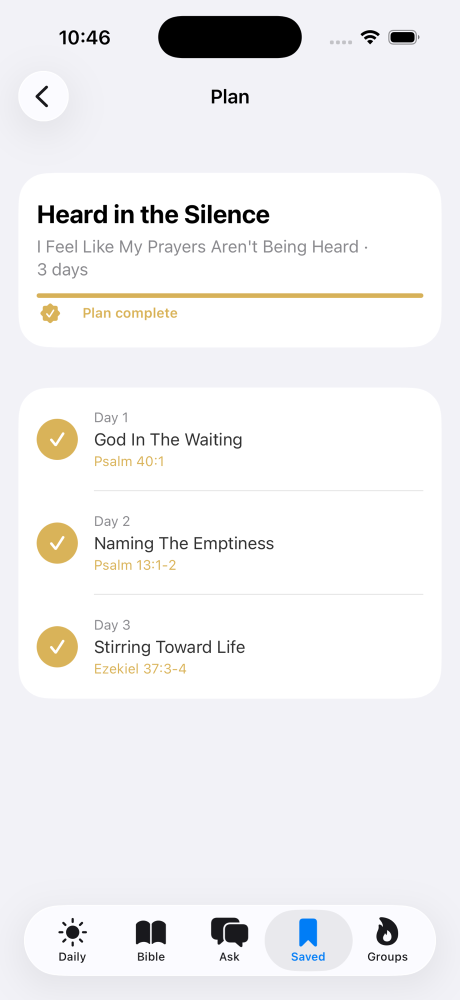
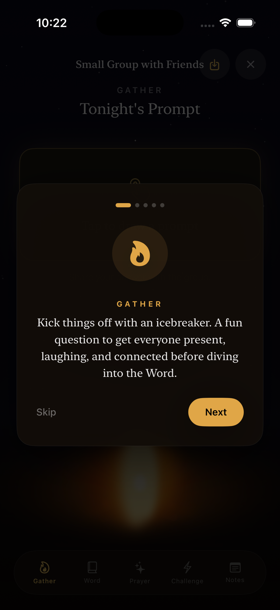

Bible Chat,
Study & Devotional.
Ask anything grounded in Scripture. Read 8 offline translations. Grow daily with devotionals and plans built for real life.
Free · No subscription to read the Bible
✦ What's Inside
Everything you need
to grow in faith.
Ask
Chat with an AI grounded in Scripture. Get guidance, explore passages, and ask anything about your faith — answered with chapter and verse.
Bible Reader
All 66 books across 8 offline translations — KJV, BSB, WEB, ASV, and more. Clean, distraction-free typography built for reading.
Daily Verse
Start each morning with a curated verse, devotional, and reflection question. A quiet moment with Scripture before the noise starts.
Devotionals
AI-guided devotional sessions and multi-day plans for whatever you're walking through — anxiety, gratitude, grief, doubt, and more.
Saved Verses
Bookmark passages that speak to you and add personal notes. Your highlights sync privately with iCloud — always there when you need them.
Small Groups
Study Scripture together. Share verses, reflections, and guided group prompts with your church small group or a circle of friends.
✦ See It in Action
More than a Bible app.
Built for everyday faith.
Five ways Cana meets you where you are.
Daily
Verse & Devotional
A curated verse, reflection, and devotional — every morning.

Bible
8 Translations, Offline
Read KJV, BSB, WEB, and five more. The whole Bible, no Wi-Fi needed.
Ask
Scripture-Grounded AI
Ask anything about faith or life. Every answer cites chapter and verse.

Plans
Multi-Day Plans
Guided plans for what you're walking through — anxiety, doubt, gratitude, grief.

Groups
Small Group Study
Run guided sessions with friends — icebreaker, Word, prayer, and challenge.
So faith comes from hearing, and hearing through the word of Christ.— Romans 10:17
✦ Begin Today
Your daily walk with Scripture starts here.
Free to download. Read the whole Bible offline. No subscription.
Download Free on the App StoreSign in with Apple · iCloud sync